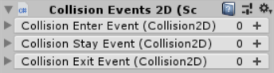
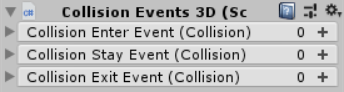
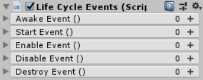
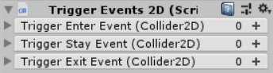
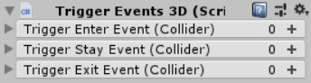
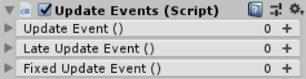
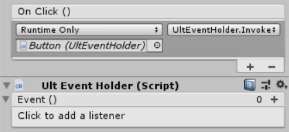

You can either declare and invoke an UltEvent in your own script or use a Premade Event Script.
Declaring an Event in a Script
You can declare an UltEvent like any other serialized field you want to show in the inspector:
// Public field:
public UltEvents.UltEvent myEvent;
// Private field with the [SerializeField] attribute:
[SerializeField]
private UltEvents.UltEvent _MyEvent;
You will also need to call myEvent.Invoke() to trigger the event when you want it to execute.
Invocation Exceptions
- The regular
UltEvent.Invokemethod contains no exception handling. Any exceptions will be passed out to the caller like normal. - The
UltEvent.InvokeSafemethod will automatically catch and log any exceptions. - If you have
using UltEvents;at the top of your script, you use theUltEventUtils.InvokeXextension method which does nothing if the event is null to avoid throwing aNullReferenceException. This is useful in case you callAddComponentat runtime since your event field will be null unlike when you add a component using the Unity Editor which will automatically create a new event object.
Premade Event Scripts
This plugin includes several scripts which have UltEvents triggered by various MonoBehaviour event messages:
| Script and messages | Inspector |
|---|---|
OnCollisionEnter2DOnCollisionStay2DOnCollisionExit2D |
 |
OnCollisionEnterOnCollisionStayOnCollisionExit |
 |
AwakeStartOnEnableOnDisableOnDestroy |
 |
OnTriggerEnter2DOnTriggerStay2DOnTriggerExit2D |
 |
OnTriggerEnterOnTriggerStayOnTriggerExit |
 |
UpdateLateUpdateFixedUpdate |
 |
UltEventHolder
The UltEventHolder script is similar to the Premade Event Scripts, except that it only has a single event which isn't triggered by anything. One use for this script is to receive a redirected UnityEvent from a UI element so that you can make use of the improved features of the UltEvents.
The DelayedUltEventHolder script can be used similarly to impose a delay before the event is actually executed.
